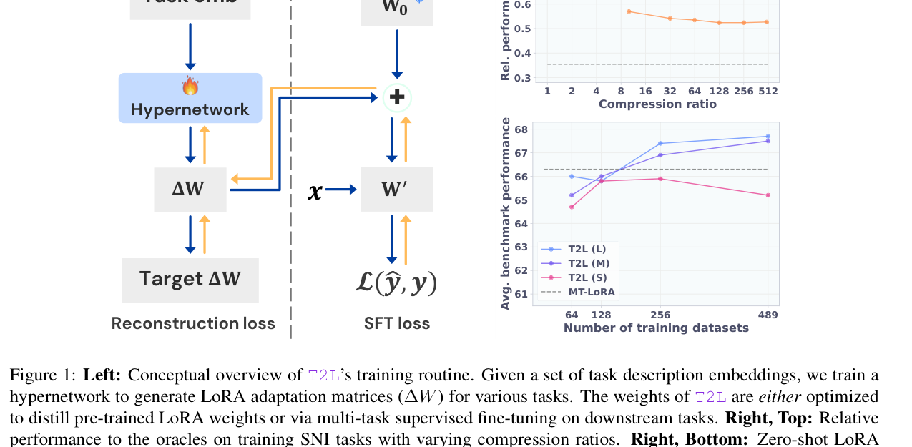
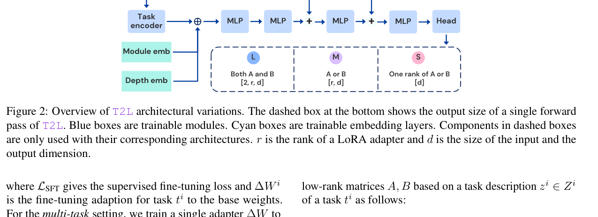

从微调走向语言驱动的即时适配
大语言模型（LLM）是通用工具，但落到具体任务时几乎总需要适配。传统路径有两条：prompt engineering（把任务描述塞进上下文）和 fine-tuning（用梯度下降把任务能力写进参数）。两条路各有硬伤：prompt 受上下文窗口限制且推理时反复付费；fine-tuning 需要 curated 数据集、反复试超参数、为每个任务存一份独立参数。
LoRA（Low-Rank Adaptation）的出现大幅降低了微调成本——只学习低秩增量矩阵 $\Delta W = BA$，骨干权重冻结。但即使是 LoRA，每个任务仍然需要独立的训练流程：准备数据集、设置学习率和 batch size、跑若干 epoch、验证收敛。这不仅是工程开销，更根本的问题是：任务之间的知识无法迁移——为数学题训练的 LoRA 和为科学问答训练的 LoRA 是两个孤立的文件，它们之间没有任何共享机制。
LoRA 库的结构性浪费
近年来社区积累了大量预训练 LoRA 适配器（GSM8K、ARC、MMLU……），但它们是离散的、不可组合的。每个 LoRA 是一个独立的权重文件，使用时只能挂一个。这引发了一个核心问题：这些 LoRA 之间是否共享同一个底层适配机制？如果有，能否用一个神经网络来"压缩"所有 LoRA，并根据自然语言描述"解码"出任意任务的 LoRA？这正是 Text-to-LoRA（T2L）要回答的问题。
T2L 的提案极其直接：训练一个 hypernetwork，输入是任务的自然语言描述（如"解决小学数学应用题"），输出是该任务的完整 LoRA 权重。整个过程在单次前向传播中完成——不需要数据集、不需要梯度下降、不需要超参数调优。用户只需用一句话描述想要的能力，T2L 即时生成对应的 LoRA。
论文的两个核心研究问题：
- 能否端到端训练一个神经网络来压缩大量预训练 LoRA？
- 能否仅根据自然语言指令，在测试时为未见任务解码出新的任务特定 LoRA？

Hypernetwork 作为 LoRA 的间接编码
T2L 的理论根基是 hypernetwork（超网络）和 indirect encoding（间接编码）两个概念的结合。
Hypernetwork 基础
Hypernetwork（Ha et al., 2016）是一个生成另一个网络参数的神经网络。给定层特定的描述向量 $\phi_l$，参数为 $\theta$ 的 hypernetwork 生成基础模型第 $l$ 层的参数：$W_l = h_\theta(\phi_l)$。传统上层描述向量是 one-hot 或可学习向量，$\theta$ 通过下游任务端到端优化。
Hypernetwork 的关键属性是间接编码（Schmidhuber, 1997）：hypernetwork 自身的参数量远小于它生成的目标网络参数量。压缩通过间接共享参数实现——不是直接存储每个权重，而是学习一个生成权重的函数。
T2L 的公式化
对于每个目标模块 $m$（如 query projection）和层索引 $l$，T2L 的 hypernetwork 根据任务 $t_i$ 的自然语言描述 $z_i$ 生成两个低秩矩阵 $A, B$：
其中：
- $f(z_i)$：自然语言任务描述的向量表示（通常是双向 transformer 的 CLS token 或 LLM 的最后 token 激活）
- $E[m]$：模块类型的可学习嵌入（query / value projection）
- $E[l]$：层索引的可学习嵌入
关键设计：$m$ 和 $l$ 的值可以 batch 化，使得 T2L 能在单次前向中为所有模块和层索引生成 $\Delta W$。这是"单次前向生成全层 LoRA"的工程基础。
间接编码的表达力边界
Hypernetwork 的间接编码意味着它不是在"记忆"每个 LoRA 的权重，而是在学习一个从任务描述到权重空间的映射函数。这个映射的表达力受限于 hypernetwork 的容量和训练数据的覆盖度。一个根本问题是：任务描述到 LoRA 权重的映射是否是良定义的？也就是说，相似的任务描述是否一定对应相似的 LoRA 权重？论文的实验（尤其是 reconstruction 训练无法泛化的发现）暗示这个映射比表面看起来更复杂——数值上不同的 LoRA 可能实现功能上相似的适配，而 hypernetwork 需要学会在这些"功能等价"的解中选择或平均。
三种输出头：L / M / S 的复杂度-性能权衡
Hypernetwork 的大部分参数来自输出层，它与目标权重的大小线性相关（Von Oswald et al., 2019）。为了探索复杂度-性能权衡，T2L 提出了三种架构变体：L（最大）、M（中等）、S（最小）。三者使用相同的骨干架构（任务编码器 + 若干 MLP 层），仅在输出头和可学习嵌入上不同。

L 架构：同时输出 A 和 B
最大的变体。最终线性层同时输出低秩矩阵 A 和 B，输出头的权重连接数为：
其中 $d_{out}$ 是最后一个 MLP 块的输出大小（默认 512），$r$ 是 LoRA rank，$d$ 是输入/输出维度。L 架构的归纳偏置最弱——它允许 A 和 B 之间有完全灵活的关系，但参数量最大。
M 架构：共享 A/B 输出头
中等大小。A 和 B 共享同一个输出层，由可学习嵌入决定当前输出 A 还是 B。输出头大小减半：
M 架构引入了一个温和的归纳偏置：A 和 B 的生成共享相同的特征变换，仅通过一个嵌入信号区分。这在 LoRA 的语境下有一定道理——A 和 B 虽然功能不同（A 通常是"下投影"、B 是"上投影"），但它们都来自同一个任务描述，共享中间表征是合理的。
S 架构：每次输出一个 rank
最小、归纳偏置最强的变体。hypernetwork 每次只输出低秩矩阵的一个 rank（一个向量），输出头大幅缩小：
S 架构需要额外的 rank 嵌入来指示当前生成第几个 rank，并且需要 $r$ 次前向（或 batch 化的 $r$ 次并行）才能组装完整的 A 或 B。这种设计的强归纳偏置是：LoRA 的不同 rank 之间共享相同的生成函数，仅通过 rank 嵌入区分。这类似于 weight tying / parameter sharing 的思想。
| 架构 | 输出头尺寸 | 可训练参数 | 归纳偏置 | 单次前向 |
|---|---|---|---|---|
| L | $d_{out} \times 2rd$ | 55M | 最弱（A/B 完全灵活） | 生成全部 A+B |
| M | $d_{out} \times rd$ | 34M | 中等（A/B 共享头） | 生成全部 A+B |
| S | $d_{emb} \times d$ | 5M | 最强（rank 间共享） | 需 batch 化 rank |
参考：一个 LoRA 适配器有 $r \times d \times 2 \times L \times |M|$ 个可训练参数（$L$=层数，$|M|$=目标模块数）。在 Mistral-7B + r=8 + Q/V only 的配置下，LoRA 本身有 3.4M 参数。T2L-L 的 55M 参数虽然比单个 LoRA 大，但它压缩了数百个 LoRA，平均每个任务的存储成本极低。
为什么 S 架构在某些任务上反而更好？
在 Table 1 的 reconstruction 实验中，S 架构在 PIQA（83.9 vs L 的 69.7）和 WG（58.1 vs L 的 51.2）上显著优于 L 和 M。论文假设这来自有损压缩的正则化效应——S 架构的强归纳偏置相当于对目标 LoRA 施加了更强的平滑先验，这在 oracle LoRA 过拟合的任务上（PIQA、WG 的 oracle 甚至比 base model 还差）反而起到了正则化作用。这揭示了一个反直觉的现象：更小的 hypernetwork 不一定是更差的近似器——它可能是更好的正则化器。
训练范式一：Reconstruction（蒸馏预训练 LoRA）
训练 T2L 最直接的方式是重建预训练的任务特定 LoRA。这种方式可以利用公开的 LoRA 库（Brüel-Gabrielsson et al., 2024; Zhao et al., 2024），或者用两阶段流程：先训练一批 LoRA，再训练 T2L 重建它们。
Reconstruction Loss
给定一个 LoRA 适配器库 $\Omega$，reconstruction 损失为：
这是一个简单的 L1 重建损失：T2L 生成的 LoRA 权重应尽可能接近目标 LoRA 的权重。
任务嵌入的选择
仅用于压缩 LoRA 时，可以用 one-hot 或可学习向量作为任务嵌入。但这些嵌入不允许零样本生成未见任务——one-hot 只能表示训练集中的任务，可学习向量对未见任务没有定义。
为了实现零样本生成，T2L 额外用自然语言任务描述的嵌入作为条件。这使得 T2L 能为各种任务（包括未见任务）生成 LoRA，只要给出对应的任务描述。
实验结果：9 个基准任务的重建
论文在 9 个基准任务上训练了任务特定 LoRA（oracle），然后训练 T2L 重建它们。Table 1 显示：
| 方法 | ArcC | ArcE | BQ | GSM8K | HS | OQA | PIQA | WG | MBPP | Avg |
|---|---|---|---|---|---|---|---|---|---|---|
| Base model | 65.4 | 77.8 | 71.6 | 40.9 | 49.7 | 54.2 | 72.8 | 45.0 | 43.1 | 55.8 |
| T2L (Recon) L | 76.6 | 89.8 | 89.4 | 53.9 | 92.6 | 85.0 | 69.6 | 51.2 | 51.8 | 73.3 |
| T2L (Recon) M | 76.5 | 89.9 | 89.4 | 53.9 | 92.5 | 84.9 | 70.4 | 51.6 | 52.8 | 73.5 |
| T2L (Recon) S | 75.4 | 88.8 | 87.8 | 49.1 | 89.7 | 76.7 | 84.2 | 56.9 | 48.0 | 73.0 |
| Task-specific LoRA | 76.6 | 89.9 | 89.4 | 53.5 | 92.6 | 85.0 | 69.9 | 51.1 | 52.1 | 73.3 |
关键发现：
- T2L 用 one-hot 或自然语言任务嵌入都能完全恢复 oracle 适配器的性能（avg 73.3-73.5 vs oracle 73.3）。
- T2L 在若干基准上超过了任务特定 LoRA（绿色高亮，如 S 在 PIQA 84.2 vs oracle 69.9）。
- 论文假设这个增益来自有损压缩的正则化效应——对已训练 LoRA 权重的损失压缩起到了正则化作用。这在 PIQA 和 WG 上最明显，那里的 oracle LoRA 过拟合并表现得比 base model 还差。
压缩即正则化：一个意外的发现
T2L 的 reconstruction 训练本质上是在做 LoRA 的有损压缩——用一个小得多的 hypernetwork 来近似原始 LoRA 权重。通常有损压缩意味着信息损失和性能下降，但 T2L 在 PIQA 和 WG 上反而超过了原始 LoRA。这暗示这些任务上的原始 LoRA 存在过拟合——它们在训练集上拟合得太好，在测试集上反而泛化差。T2L 的压缩相当于对 LoRA 权重施加了一个低秩/平滑先验，去除了过拟合的噪声分量。这个现象与知识蒸馏中的"学生网络有时超过教师网络"有异曲同工之妙——压缩过程本身就是一种正则化。
增加任务数时的压缩性能
论文进一步探索了 one-hot T2L 在增加训练任务数（{16, 32, 64, 128, 256, 479}）时的表现。随着任务数增加，平均训练 L1 重建误差增加（从 $<10^{-4}$ 到 $>8 \times 10^{-4}$），相对 oracle 的性能下降。但关键发现是：
- 当重建误差 $< 10^{-4}$ 时，T2L 完全恢复 oracle 性能。
- 即使在 $> 8 \times 10^{-4}$ 的高误差下，所有架构仍能维持约 65% 的 oracle 性能，且不再继续下降。
- 这表明 T2L 学到的是 LoRA 的有损压缩，但压缩有一个"地板效应"——性能不会无限下降。
训练范式二：SFT（端到端多任务监督）
Reconstruction 训练需要预先存在的 LoRA 库，而且——正如论文随后发现的——reconstruction 训练的 T2L 无法泛化到未见任务。为了解决这个问题，论文提出了第二种训练范式：直接在微调数据集上端到端训练 T2L。
SFT Loss
T2L 的 SFT 训练目标为：
其中 $\Psi$ 是冻结的基础模型权重，$h_\theta(\phi^i)$ 是 T2L 为任务 $t_i$ 生成的 LoRA。与单任务 SFT（式 1）和多任务 LoRA（式 2）不同，T2L 的 SFT 是任务条件化的——同一个 hypernetwork 根据任务描述生成不同的 LoRA，然后在对应任务的数据集上计算损失。
为什么 SFT 优于 Reconstruction？
论文给出了一个关键论证：如果现有的训练 LoRA 不是按功能自然聚类的，reconstruction 训练就会有问题。例如，$t_1$ 和 $t_2$ 可能是两个相关任务，需要相似的 LLM 能力，但 $\Delta W^1$ 和 $\Delta W^2$ 可能落在不同的局部最小值。Reconstruction 训练的 T2L 必须压缩数值上不同的 $\Delta W^1$ 和 $\Delta W^2$，这使得它更不可能泛化。
相比之下，SFT 训练的 T2L 可以隐式地学习任务聚类——它不要求生成的 LoRA 接近某个预训练的目标，而是直接在下游任务上优化性能。这已被证明可以改善零样本 LoRA 路由性能（Ostapenko et al., 2024）。
训练细节
- 使用 Super Natural Instructions (SNI) 数据集的 500 任务子集（跟随 Brüel-Gabrielsson et al., 2024）。
- 11 个任务用于留出验证，10 个因评估基准数据污染被移除，最终 479 个训练数据集。
- 每个数据集有 128 个自然语言任务描述。
- 每个训练 minibatch 中的数据点，在线从对应数据集中采样一个描述。
- 所有样本为英文。
SFT 训练的计算成本
SFT 训练 T2L 需要在每次前向中：(1) 用 T2L 生成 LoRA，(2) 把 LoRA 挂到 LLM 上，(3) 在任务数据上做前向和反向传播。这意味着每次训练迭代都需要一次完整的 LLM 前向+反向，计算成本不低。论文在 479 个任务上训练，虽然没有明确报告总训练时间，但考虑到 Mistral-7B 的规模，这需要可观的 GPU 资源。相比之下，reconstruction 训练只需要 T2L 的前向+反向（不需要 LLM 前向），计算成本低得多。这是一个重要的权衡：SFT 换来泛化能力，但训练成本显著更高。
泛化之谜：为什么 Reconstruction 不能泛化？
论文最深刻的发现之一是：用 reconstruction loss 训练的 T2L 无法零样本泛化到未见任务，而用 SFT 训练的可以。这个发现不仅是工程上的，更揭示了 LoRA 权重空间的本质结构。
实验证据
论文在 Section 5.4 和 Appendix D 中详细研究了这个问题。核心观察是：
- Reconstruction 训练的 T2L 在训练任务上能完美重建 LoRA（avg 73.3 vs oracle 73.3），但在未见任务上生成的 LoRA 性能很差。
- SFT 训练的 T2L 在训练任务上性能略低，但在未见任务上显著更好（零样本 avg 67.7 vs base 55.8）。
理论解释：LoRA 的功能等价类
论文的解释（Appendix D）是：不同的 LoRA 权重可以实现功能上等价的适配。也就是说，对于同一个任务，存在多个数值上不同但功能上相似的 $\Delta W$ 解。Reconstruction 训练的 T2L 学到的是"从任务描述到特定数值解"的映射，但由于训练集中每个任务只有一个特定的 $\Delta W$（某个随机初始化+优化轨迹的产物），T2L 学到的映射是过拟合到这些特定解的。当遇到未见任务时，T2L 不知道应该选择哪个功能等价的解，生成的权重可能落在一个"坏"的区域。
SFT 训练则不同：它不要求生成的 LoRA 接近任何特定的数值解，只要求生成的 LoRA 在下游任务上表现好。这使得 T2L 可以在功能等价的解空间中自由选择，学到的是"从任务描述到好的功能区域"的映射，而不是"到特定数值点"的映射。
从"记住答案"到"学会解题"
Reconstruction vs SFT 的区别可以类比为教育中的"死记硬背"vs"理解学习"。Reconstruction 训练的 T2L 记住了每个训练任务的 LoRA 权重（"答案"），但没有学会为什么这些权重有效（"解题方法"）。当遇到新任务时，它只能猜测一个答案，可能猜错。SFT 训练的 T2L 则学会了根据任务描述生成有效的 LoRA（"解题方法"），因为它的训练信号直接来自下游性能，而不是与某个特定答案的接近度。这个类比虽然粗略，但抓住了核心：优化目标决定了学到的表示的泛化性质。
LoRA 压缩：数百个适配器的有损编码
T2L 的第一个实验目标是验证它能否有效压缩大量预训练 LoRA。这不仅是一个工程问题（存储效率），更是一个科学问题：不同任务的 LoRA 之间是否共享足够的结构，使得一个小 hypernetwork 能够同时编码数百个？
压缩比与性能的关系
Figure 1（右上）展示了不同压缩比下 T2L 相对 oracle 的性能。压缩比从 1 到 512，T2L(L/M/S) 三种架构的相对性能都维持在 0.85-1.0 之间，远高于 Average LoRA（简单平均所有 LoRA，约 0.6）和 Base model（约 0.55）。
关键观察：
- 即使在 512 倍压缩比下，T2L 仍能维持约 85% 的 oracle 性能。
- 三种架构的压缩性能相近，L 略优但差距很小。
- Average LoRA（把所有 LoRA 元素-wise 平均）性能急剧下降，说明简单平均不是有效的压缩方式——T2L 学到的是任务条件化的生成，而不是全局平均。
训练任务数与重建误差
Figure 3 展示了增加训练任务数（{16, 32, 64, 128, 256, 479}）时的表现。随着任务数增加：
- 平均 L1 重建误差从 $<10^{-4}$ 增加到 $>8 \times 10^{-4}$（hypernetwork 需要编码更多样的 LoRA）。
- 相对 oracle 的性能从接近 1.0 下降到约 0.65-0.75。
- 但性能有一个地板效应——即使在最高误差下，性能也不会低于约 65%，且不再继续下降。
压缩的地板效应说明了什么？
性能地板效应（约 65% oracle 性能）暗示 LoRA 权重空间中存在一个共享的"主干"结构——即使 hypernetwork 完全无法编码任务特定的细节，它生成的 LoRA 仍然包含了所有任务共享的适配方向（比如"增加注意力锐度"或"调整输出分布"）。这个共享主干贡献了约 65% 的性能提升，而任务特定的细节贡献了剩余的 35%。这个分解对于理解 LoRA 的本质很重要：LoRA 适配 = 通用适配方向 + 任务特定调整，前者可以被小模型高效编码，后者需要更多容量。
压缩的实际意义
T2L-L 有 55M 参数，可以压缩 479 个 LoRA（每个 3.4M，总计约 1.6B 参数）。压缩比约为 29:1。更重要的是，T2L 的参数是固定的——增加更多任务不需要增加存储，只需要在训练时见过更多任务。这使得 T2L 可以作为一个通用的 LoRA 生成器，用户不需要存储和管理数百个 LoRA 文件，只需要一个 T2L 模型和任务描述。
Zero-shot：为未见任务即时生成 LoRA
这是 T2L 最核心的实验：在训练时完全未见过的任务上，仅根据自然语言描述生成 LoRA，性能如何？
评估设置
SFT 训练的 T2L（479 SNI 任务）在 10 个广泛使用的基准上零样本评估，覆盖推理、数学、科学、编码、世界知识等能力：
- 推理/科学：ARC-Challenge, ARC-Easy, OpenBookQA, PIQA
- 数学：GSM8K
- 常识：BoolQ, HellaSwag, Winogrande
- 编码：HumanEval, MBPP
对比基线包括：
- 无测试时适配：Base model、Prepending task desc.、3-shot ICL、Average LoRA、Multi-task LoRA
- 零样本适配：Arrow Routing（Ostapenko et al., 2024, SOTA 零样本 LoRA 路由）、Hyperdecoders（per-instance hypernetwork）、T2L (SFT) S/M/L
- Oracle：任务特定 LoRA（上界）
核心结果
| 方法 | ArcC | ArcE | BQ | HS | OQA | PIQA | WG | MBPP | Avg(8) | GSM8K | HE | Avg(10) |
|---|---|---|---|---|---|---|---|---|---|---|---|---|
| 无测试时适配 | ||||||||||||
| Mistral-7B | 65.4 | 77.8 | 71.6 | 49.7 | 54.2 | 72.8 | 45.0 | 43.1 | 60.0 | 40.9 | 37.2 | 55.8 |
| Prepend desc. | 72.0 | 85.8 | 67.6 | 58.9 | 63.4 | 77.9 | 59.0 | 41.6 | 65.8 | 40.9 | 39.0 | 60.6 |
| 3-shot ICL | 72.1 | 85.9 | 71.7 | 59.0 | 66.2 | 76.2 | 58.0 | 42.6 | 66.5 | 40.9 | 37.2 | 61.0 |
| Average LoRA | 70.7 | 84.4 | 75.4 | 59.9 | 59.0 | 78.0 | 54.3 | 47.1 | 66.1 | 42.4 | 37.8 | 60.9 |
| Multi-task LoRA | 76.2 | 88.3 | 85.5 | 65.2 | 68.0 | 81.8 | 62.4 | 48.1 | 71.9 | 47.5 | 39.6 | 66.3 |
| 零样本适配 | ||||||||||||
| Arrow Routing | 60.9 | 86.2 | 87.6 | 80.8 | 48.6 | 83.0 | 68.5 | 50.2 | 70.7 | N/A | 28.7 | N/A |
| Hyperdecoders | 76.6 | 88.5 | 83.9 | 65.2 | 76.6 | 81.3 | 64.9 | 51.6 | 73.6 | 43.6 | 40.9 | 67.3 |
| T2L (SFT) S | 76.0 | 88.7 | 83.8 | 68.0 | 71.6 | 82.3 | 61.0 | 41.2 | 71.6 | 47.3 | 39.0 | 65.9 |
| T2L (SFT) M | 77.2 | 89.0 | 84.3 | 65.1 | 76.1 | 81.8 | 64.0 | 50.5 | 73.5 | 45.2 | 41.3 | 67.5 |
| T2L (SFT) L | 77.5 | 88.9 | 85.0 | 66.5 | 75.5 | 82.1 | 64.2 | 51.9 | 73.9 | 45.8 | 39.2 | 67.7 |
| Oracle（上界） | ||||||||||||
| Task-specific LoRA | 76.6 | 89.9 | 89.4 | 92.6 | 85.0 | 69.9 | 51.1 | 52.1 | 75.8 | 53.5 | N/A | N/A |
关键发现：
- T2L (SFT) L 零样本 avg 67.7，超过 Multi-task LoRA（66.3）、3-shot ICL（61.0）、Base model（55.8）。
- T2L 在 8 个任务的 avg 上达到 73.9，接近 Hyperdecoders（73.6）和 oracle（75.8）。
- T2L 在若干任务上超过 oracle 任务特定 LoRA（绿色高亮，如 ArcC 77.5 vs 76.6，PIQA 82.1 vs 69.9）。
- T2L 超过 Arrow Routing（SOTA 零样本 LoRA 路由方法）在可比指标上。
- GSM8K（45.8 vs oracle 53.5）和 HumanEval（39.2）上仍有明显差距——这些任务与训练分布差异最大（训练任务不含代码生成）。
零样本生成的能力边界
T2L 在零样本上的表现揭示了它的能力边界：
擅长：与训练任务分布相近的任务（多选 QA、常识推理、科学问答）。这些任务的 LoRA 适配模式在训练中被充分覆盖，T2L 可以从任务描述中识别出"这是哪类任务"并生成对应的适配。
不擅长：与训练分布差异大的任务（代码生成 HumanEval/MBPP、数学推理 GSM8K）。SNI 训练集中几乎没有代码生成任务，T2L 没有见过"代码任务的 LoRA 长什么样"，因此无法生成有效的适配。这说明 T2L 的零样本泛化是基于任务分布内的插值，而不是真正的分布外泛化。
消融分析：Scaling、嵌入与架构
9.1 增加训练任务数（Scaling）
论文探索了 T2L 的可扩展性：变化训练任务数并按比例扩展训练计算预算。Table 3（Figure 1 右下）显示：
- 增加训练任务数和计算预算后，T2L 普遍受益。
- L 和 M 架构从 64→128→256→479 任务中持续提升。
- S 架构在 479 任务时没有从扩展训练中受益——可能因为模型容量有限，无法吸收更多任务的信息。
- 论文还发现（Appendix C）：必须按任务数比例扩展计算预算。如果固定预算而增加任务数，性能反而会下降（每个任务的训练步数减少）。M 架构在 256+ 任务时，扩展预算的版本明显优于固定预算版本。
Scaling law 的雏形
T2L 的 scaling 实验暗示了一个类似 LLM scaling law 的规律：零样本性能随训练任务数和计算预算的增加而提升。Figure 1 右下的曲线显示，从 64 到 489 任务，T2L-L 的 avg benchmark 性能从约 65 提升到约 67.5，且仍在上升。这暗示 T2L 可能受益于更大规模的训练（更多任务、更多计算、更大的 hypernetwork）。但论文没有给出定量的 scaling law 拟合（如性能 vs 任务数的幂律关系），这是一个开放问题。
9.2 任务嵌入模型
Table 4 比较了两种任务描述嵌入模型：
- gte-large-en-v1.5：双向 transformer，用最后一层 CLS token 激活。
- Mistral-7B-Instruct：用序列最后一个 token 的激活表示描述。
在 128 任务上 SFT 训练后，两种嵌入模型产生的 T2L 具有可比的泛化能力。这说明 T2L 对任务描述嵌入方法具有鲁棒性——只要嵌入能捕捉任务的语义信息，具体用什么模型影响不大。
9.3 架构对比
三种架构（L/M/S）在零样本上的表现：
- L（55M）avg 67.7，M（34M）avg 67.5，S（5M）avg 65.9。
- L 和 M 非常接近，差距仅 0.2 分——说明共享 A/B 输出头（M 架构）几乎没有性能损失，但参数减少了 38%。
- S 架构差距较大（-1.8 分），但考虑到它只有 5M 参数（L 的 1/11），这个性能仍然可观。
9.4 文本任务描述 vs One-hot
在 reconstruction 实验中，one-hot 和自然语言任务嵌入的性能几乎相同（avg 73.4 vs 73.3）。但 one-hot 无法零样本泛化——它只能表示训练集中的任务。自然语言嵌入的价值不在于重建性能，而在于为未见任务提供有意义的输入表示。
9.5 LoRA 聚类可视化
论文在 Section 5.5 中可视化了 T2L 生成的 LoRA 在降维空间中的分布，发现了语义上有意义的聚类——相似任务的 LoRA 在空间中聚集在一起。这进一步验证了 T2L 学到的是任务语义到 LoRA 功能的映射，而不是任意的权重生成。
局限、批判与未来方向
已证实的局限
1. 零样本泛化限于训练分布内
T2L 在与训练任务（SNI，主要是多选 QA）相近的任务上表现好，但在代码生成（HumanEval/MBPP）和数学推理（GSM8K）上差距明显。这说明 T2L 的零样本能力是基于任务分布内的插值，不是真正的分布外泛化。如果用户需要的任务与训练分布差异大，T2L 可能无法生成有效的 LoRA。
2. Reconstruction 训练无法泛化
Reconstruction 训练的 T2L 虽然能完美重建训练任务的 LoRA，但完全无法零样本泛化。这意味着如果用户只有预训练 LoRA 库而没有对应的微调数据集，就无法获得泛化能力——必须用 SFT 重新训练。
3. SFT 训练成本高
SFT 训练 T2L 需要在每次迭代中做完整的 LLM 前向+反向，计算成本不低。在 479 任务上训练 Mistral-7B 规模的模型需要可观的 GPU 资源。这限制了 T2L 的可扩展性——如果要训练数千或数万个任务，计算成本会非常高。
4. 仅支持 Q/V 投影
论文的所有实验只对注意力的 query 和 value 投影做 LoRA（3.4M 参数）。没有探索对 MLP、output projection 等更多模块的适配。更多模块可能带来更好的性能，但也会增加 T2L 的输出维度和训练难度。
5. 任务描述的敏感性
T2L 的输入是自然语言任务描述，生成的 LoRA 质量可能受描述方式影响。论文用了 128 个描述/任务并平均了 3 个描述的结果，但没有系统研究描述质量/风格对生成 LoRA 性能的影响。用户可能需要"正确"的描述方式才能获得好结果。
与 SHINE 的本质区别
T2L 和 SHINE（上一篇）都属于"context→LoRA"方向，但有本质区别：
T2L：输入是任务描述（"解决数学题"），生成的是任务级 LoRA——适配模型的行为模式，不包含具体知识。训练用 SNI 的 479 个任务数据集。
SHINE：输入是具体 context（一篇文章、一段对话），生成的是知识级 LoRA——把 context 的具体内容编码进参数。训练用 6B token 的重建/补全 + QA 微调。
两者是互补的：T2L 解决"模型应该做什么"（能力适配），SHINE 解决"模型应该知道什么"（知识注入）。一个有趣的未来方向是结合两者——先用 T2L 生成任务能力 LoRA，再用 SHINE 生成知识 LoRA，然后组合使用。
未来方向
值得探索的研究方向
- 更大规模的 T2L：增加训练任务数到数千/数万，扩大 hypernetwork 容量，探索 T2L 的 scaling law。能否像 LLM 一样，通过规模扩展获得涌现能力？
- 多模态任务描述：扩展 T2L 处理图像/音频任务描述，生成多模态 LoRA。
- 动态 LoRA 生成：T2L 目前生成静态 LoRA，能否在推理时根据输入动态调整 LoRA（per-instance adaptation）？
- LoRA 组合性：T2L 生成的多个任务 LoRA 能否安全组合（加权求和、张量积）？组合后的性能是否可预测？
- Reconstruction + SFT 混合训练：能否先用 reconstruction 预训练 T2L（低成本），再用 SFT 微调（高成本但少量），兼得两者优势？
自主科研问题
- LoRA 功能等价类的几何结构是什么？论文证明同一任务存在多个功能等价的 LoRA 解，但这些解在权重空间中形成的流形的维度、曲率、连通性是什么？能否用信息几何工具刻画？这直接影响 hypernetwork 的泛化能力。
- T2L 的零样本泛化是否存在"任务嵌入空间的流形假设"？T2L 能泛化可能是因为未见任务的嵌入落在训练任务嵌入的凸包内。如果是这样，泛化边界就是训练任务嵌入的凸包——能否通过实验验证这个假设，并找到凸包外的任务来测试真正的分布外泛化？
- 任务描述到 LoRA 的映射是否是 Lipschitz 连续的？如果是，相似描述应生成相似 LoRA（论文的聚类可视化支持这一点）。Lipschitz 常数是多少？能否通过正则化控制这个常数来改善泛化？
- T2L 生成的 LoRA 与直接微调的 LoRA 在功能上有何本质差异？T2L 在 PIQA 上超过 oracle，暗示生成的 LoRA 可能有不同的归纳偏置。能否通过探针（probing）或因果中介分析（causal mediation）揭示 T2L LoRA 与微调 LoRA 在模型内部表示上的差异？
- 能否用 T2L 做 LoRA 的"语言界面"？用户用自然语言描述"我想要一个更保守的回答风格"，T2L 生成对应的 LoRA。这需要 T2L 理解抽象的风格/行为描述，而不仅是任务类型描述。能否通过对比学习（contrastive learning）训练 T2L 理解这种抽象描述？
总结
Text-to-LoRA 是 Sakana AI 在 ICML 2025 上提出的一种语言驱动的即时适配方法。它用一个 hypernetwork 把自然语言任务描述映射为 LoRA 权重，单次前向完成，无需数据集、无需微调、无需超参数。核心贡献包括：
- 架构设计：任务描述嵌入 + 模块/层嵌入 + MLP hypernetwork，三种输出头（L/M/S）探索复杂度-性能权衡。
- 两种训练范式：Reconstruction（蒸馏预训练 LoRA，完美重建但不泛化）和 SFT（端到端多任务监督，可零样本泛化）。
- 核心发现：Reconstruction 训练无法泛化（因为 LoRA 的功能等价类问题），SFT 训练可以泛化（因为直接优化下游性能）。
- 实验验证：479 任务训练后，零样本在 10 基准上 avg 67.7，超过 Multi-task LoRA、ICL、Arrow Routing，接近 oracle。
- 压缩能力：55M 参数压缩数百个 LoRA，即使 512 倍压缩比仍维持 85% 性能。
T2L 的意义不仅在于一个新的适配方法，更在于它提出了一个愿景：让 LoRA 适配器有一个自然语言界面——用户不再需要管理数百个 LoRA 文件，只需用一句话描述想要的能力，系统即时生成对应的适配器。这是迈向"模型能力的语言化操作"的重要一步。